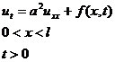
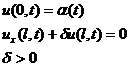
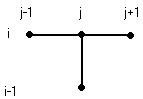
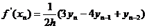
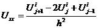
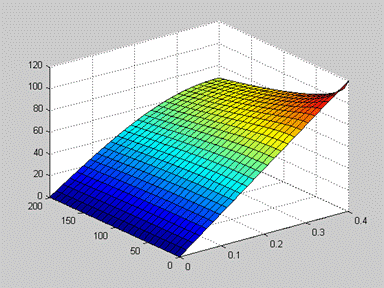
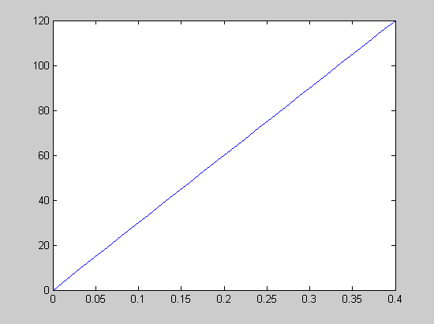
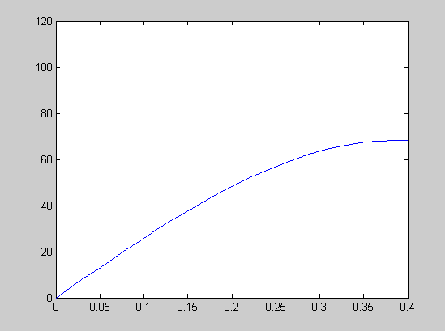

Решить краевую задачу для заданного уравнения методом сеток и реализовать его как систему программных единиц в СКМ MatLab.
Заданное уравнение:
Граничные условия:
Начальные условия:

Аппроксимацию уравнения будем проводить по неявной схеме.
Аппроксимация с помощью левых разностей:


Для аппроксимации производной в краевом условии применяем формулу:
Получаем:


Такая аппроксимация имеет второй порядок погрешности по h и первый порядок по τ
Разностная схема принимает вид:

Начальные условия:

После преобразования матрица этой системы становится трёхдиагональной. Системы уравнений с такими матрицами удобно решать методом прогонки. Преимущества этого метода ещё и в том, что он точный и количество операций в нём линейно зависит от числа уравнений, следовательно, накапливаемая ошибка мала.
Входными данными будут функции α(t), φ(х), f(x,t), а так же значения параметров. Ещё сюда входят интервалы по времени и по х.
Выходные данные - это значения функции U в узлах сетки.
N = 25; % разбиение стержня по длине
M = 25; % разбиение времени
% физические параметры
lambda = 390; % коэффициент теплопроводности
c = 380; % теплоемкость
ro = 9000; % плотность
alfa2 = 50;
% параметры задачи
L = 0.4; % длина
T = 2000; % время
aa = lambda/(c*ro); % параметр
delta = alfa2/lambda; % параметр
% задание пространственно-временной сетки
h = L/N; % шаг по х
tau = T/M; % шаг по t
for i=1:N+1
x(i)=(i-1)*h;
end;
for i=1:M+1
t(i)=(i-1)*tau;
end;
% коэффициенты основного уравнения
b = -aa*tau;
c = h*h+2*aa*tau;
d = -aa*tau;
% коэффициенты граничного условия
p = 1;
r = -4;
q = 3 + 2*h*delta;
% построение 3-х диагональной матрицы
A = zeros(N+1);
for i=2:N
A(i,i-1) = d;
A(i,i) = c;
A(i,i+1) = b;
end
A(1,1)=1;
k = p/d;
A(N+1,N-1) = p-d*k;
A(N+1,N) = r-c*k;
A(N+1,N+1) = q-b*k;
% запись начальных условий
for i=1:N+1
U(1,i) = Phi(x(i));
end
% Решение краевой задачи
for j=2:M+1
D(1)=Alfa(t(j));
for i=2:N
D(i) = h*h*tau*F(x(i),t(j)) + h*h*U(j-1,i);
end
D(N+1) = 0 - D(N)*k;
Y=Progonka(A,D,N);
for s=1:N+1
U(j,s)=Y(s);
end
end;
% графический вывод результатов
period = 5; %интервал вывода графиков
for p= 1:M/period
scrsz = get(0,'ScreenSize'); %разрешение экрана
w = scrsz(3)/3; %выставляем ширину окон графиков
h2 = 80; %высота заголовка окна
h = (scrsz(4)-2*h2)/2; %высота окон графиков
figure(p);
if p<=3 upos = [(p-1)*w, h+h2, w, h] ; %1 ряд
else upos = [(p-4)*w, 0, w, h] ; %2 ряд
end;
set(figure(p),'Position',upos);
plot(x,U(p+(p-1)*period,:))
axis([0 L 0 120]);
end
% 3D
figure(6);
upos = [2*w, 0, w, h] ;
set(figure(p+1),'Position',upos);
surf(x,t,U);
% анимация
figure (7)
title('Animation');
upos = [0, 0, scrsz(3), scrsz(4)-h2] ;
set(figure(7),'Position',upos);
for j = 1:M
plot(x,U(j,:));
axis([0 L 0 120]);
F(j) = getframe;
end
movie(F,1,1)
function Progonka = Progonka(A,D,N)
d(1)=A(1,2);
c(1)=A(1,1);
for i=2:N
c(i)=A(i,i);
d(i)=A(i,i+1);
b(i)=A(i,i-1);
end
b(N+1)=A(N+1,N);
c(N+1)=A(N+1,N+1);
d(N+1)=0;
alfa(1)=-d(1)/c(1); %прямой ход
beta(1)=D(1)/c(1);
for i=2:(N+1)
alfa(i)= -d(i)/(c(i)+b(i)*alfa(i-1));
beta(i)= (D(i)-b(i)*beta(i-1))/(c(i)+b(i)*alfa(i-1));
end
Y(N+2)=0; %обратный ход
i=N+1;
while i>=1
Y(i)=alfa(i)*Y(i+1)+beta(i);
i=i-1;
end
Progonka = Y;
function Alfa = Alfa(t) Alfa = 0;
function Phi = Phi(x) Phi = 300*x;
function F = F(x,t) F = 0;

График:

Графики, показывающие распределение температуры по стержню в разные моменты времени:
В начальный момент времени:
В промежуточные моменты времени:


В конечный момент времени:
Как видно из графиков, со временем стержень охлаждается.